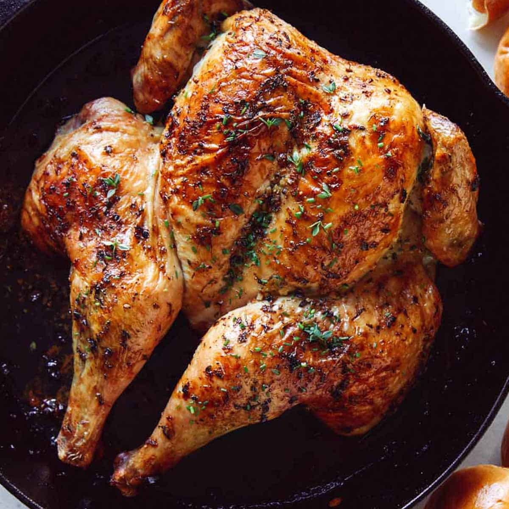

Spatchcock Chicken Bake

Description
An easy and faster alternative to baking chicken. This method
ensures juicy and flavorful chicken breasts that remain as flavorful
as the chicken thighs. Once you try this method of baking your chicken,
you will never want to try regular chicken again!
Ingredients
- Whole Chicken
- Salt
- Pepper
- Mayonnaise
- Seasoning of choice (Italian, Spicy etc)
Steps
- Preheat oven for 400 F
- Create spice rub by mixing mayonnaise with seasoning, salt and pepper
- Lie chicken on a clean service
- Using kitchen shears, cut away the spine
- Press down on the breasts to break away the breast bone for flat chicken
- Create pockets under the skin by slightly removing away skin from meat
- With bare hands, put spice rub underneath the pockets of skin created
- Put seasoned chicken on a baking pan
- Bake for 45 minutes
- Serve and Enjoy!